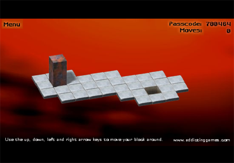

Bloxorz: Instructions Help
When you're ready to submit your solution, go to the assignments list.
Attention: You are allowed to submit a maximum of 5 times! for grade purposes. Once you have submitted your solution, you should see your grade and a feedback about your code on the Coursera website within 10 minutes. If you want to improve your grade, just submit an improved solution. The best of all your first 5 submissions will count as the final grade. You can still submit after the 5th time to get feedbacks on your improved solutions, however, these are for research purposes only, and will not be counted towards your final grade.
Download the streams.zip handout archive file and extract it somewhere on your machine.
In this assignment you will implement a solver for a simplified version of a Flash game named “Bloxorz” using streams and lazy evaluation.
As in the previous assignments, you are encouraged to look at the Scala API documentation while solving this exercise, which can be found here:
http://www.scala-lang.org/api/current/index.html
Bloxorz

Bloxorz is a game in Flash, which you can access here. As a first step for this assignment, play it for a few levels.
The objective of Bloxorz is simple; you must navigate your rectangular block to the hole at the end of the board, by rolling it, in the fewest number of moves possible. A block can be moved in 4 possible directions, left, right, up, down, using the appropriate keys on the keyboard.
You will quickly notice that for many levels, you are, in your head, trying to walk through different configurations/positions of where the block can be in order to reach it to the goal position. Equipped with some new programming skills, you can now let your computer do the work!
The idea of this assignment is to code a solver for a simplified version of this game, with no orange tiles, circles or crosses on the terrain. The goal of your program, given a terrain configuration with a start position and a goal position, is to return the exact sequence of keys to type in order to reach the goal position. Naturally, we will be interested in getting the shortest path as well.
State-space Exploration
The theory behind coding a solver for this game is in fact be applicable to many different problems. The general problem we are trying to solve is the following:
-
We start at some initial state
S, and we are trying to reach an end stateT. -
From every state, there are possible transitions to other states, some of which are out of bounds.
-
We explore the states, starting from
S. by exploring its neighbors and following the chain, until we reachT. There are different ways of exploring the state space. On the two ends of the spectrum are the following techniques:- depth-first search: when we see a new state, we immediately explore its direct neighbors, and we do this all the way down, until we reach a roadblock. Then we backtrack until the first non-explored neighbor, and continue in the same vein.
- breadth-first search: here, we proceed more cautiously. When we find the neighbors of our current state, we explore each of them for each step. The respective neighbors of these states are then stored to be explored at a later time.
Game Setup
Let us start by setting up our platform. The trait GameDef will contain all the logic regarding how the terrain is setup, the blocks are represented and how they move.
Positions
A position on the game board is represented using the case class Pos(x:Int, y:Int), where x and y represent its coordinates. The scaladoc comment on class Pos explains how to interpret the coordinates:
- The
xcoordinate denotes the position on the vertical axis - The
ycoordinate is used for the horizontal axis - The coordinates increase when moving down and right
Illustration:
0 1 2 3 <- y axis
0 o o o o
1 o o o o
2 o # o o # is at position Pos(2, 1)
3 o o o o
^
|
x axisThe Terrain
We represent our terrain as a function from positions to booleans:
type Terrain = Pos => BooleanThe function returns true for every position that is
inside the terrain. Terrains can be created easily from a string
representation using the methods in the file StringParserTerrain.scala.
Your first task is to implement two methods in trait StringParserTerrain
that are used to parse the terrain and the start / end positions. The
Scaladoc comments give precies instructions how they should be
implemented.
def terrainFunction(levelVector: Vector[Vector[Char]]): Pos => Boolean = ???
def findChar(c: Char, levelVector: Vector[Vector[Char]]): Pos = ???Blocks
Back in the file GameDef.scala, a block is a 2 x 1 x 1
cuboid. We represent it as a case class which contains two fields, the
2d position of both the cubes which make up the block.
A Block is therefore a case class Block(b1: Pos, b2: Pos), and can move in four different directions, each time yielding a new block. To this effect, the methods left, right, up and down are provided.
Given this, you can now define a method isStanding which tells us whether the Block is standing or not:
def isStanding: Boolean = ???Next, implement a method isLegal on Block which tells us whether a block is on the terrain or off it:
def isLegal: Boolean = ???Finally, we need to implement a method that constructs the initial block for our simulation, the block located at the start position:
def startBlock: Block = ???Moves and Neighbors
To record which moves we make when navigating the block, we represent the four possible moves as case objects:
sealed abstract class Move
case object Left extends Move
case object Right extends Move
case object Up extends Move
case object Down extends MoveYou can now implement the functions neighbors and legalNeighbors on Block, which return a list of tuples: the neighboring blocks, as well as the move to get there.
def neighbors: List[(Block,Move)] = ???
def legalNeighbors: List[(Block,Move)] = ???Solving the Game
Now that everything is set up, we can concentrate on actually coding our solver which is defined in the file Solver.scala.
We could represent a path to a solution as a Stream[Block]. We however also need to make sure we keep the history on our way to the solution. Therefore, a path is represented as a Stream[(Block, List[Move])], where the second part of the pair records the history of moves so far. Unless otherwise noted, the last move is the head element of the List[Move].
First, implement a function done which determines when we have reached the goal:
def done(b: Block): Boolean = ???Finding Neighbors
Then, implement a function neighborsWithHistory, which, given a block, and its history, returns a stream of neighboring blocks with the corresponding moves.
def neighborsWithHistory(b: Block, history: List[Move]): Stream[(Block, List[Move])] = ???As mentioned above, the history is ordered so that the most recent
move is the head of the list. If you consider Level 1 as defined in Bloxorz.scala, then
neighborsWithHistory(Block(Pos(1,1),Pos(1,1)), List(Left,Up))results in a stream with the following elements (given as a set):
Set(
(Block(Pos(1,2),Pos(1,3)), List(Right,Left,Up)),
(Block(Pos(2,1),Pos(3,1)), List(Down,Left,Up))
)You should implement the above example as a test case in the test suite BloxorzSuite.
Avoiding Circles
While exploring a path, we will also track all the blocks we have
seen so far, so as to not get lost in circles of movements (such as
sequences of left-right-left-right). Implement a function newNeighborsOnly to this effect:
def newNeighborsOnly(neighbors: Stream[(Block, List[Move])],
explored: Set[Block]): Stream[(Block, List[Move])] = ???Example usage:
newNeighborsOnly(
Set(
(Block(Pos(1,2),Pos(1,3)), List(Right,Left,Up)),
(Block(Pos(2,1),Pos(3,1)), List(Down,Left,Up))
).toStream,
Set(Block(Pos(1,2),Pos(1,3)), Block(Pos(1,1),Pos(1,1)))
)returns
Set(
(Block(Pos(2,1),Pos(3,1)), List(Down,Left,Up))
).toStreamAgain, you should convert this example into a test case.
Finding Solutions
Now to the crux of the solver. Implement a function from,
which, given an initial stream and a set of explored blocks, creates a
stream containing the possible paths starting from the head of the
initial stream:
def from(initial: Stream[(Block, List[Move])],
explored: Set[Block]): Stream[(Block, List[Move])] = ???Note: pay attention to how the path is constructed: as discussed in the introduction, the key to getting the shortest path for the problem is to explore the space in a breadth-first manner.
Hint: The case study lecture about the water pouring problem (7.5) might help you.
Putting Things together
Finally we can define a lazy val pathsFromStart which is a stream of all the paths that begin at the starting block:
lazy val pathsFromStart: Stream[(Block, List[Move])] = ???We can also define pathToGoal which is a stream of all
possible pairs of goal blocks along with their history. Indeed, there
can be more than one road to Rome!
lazy val pathsToGoal: Stream[(Block, List[Move])] = ???To finish it off, we define solution to contain the (or one of the) shortest list(s) of moves that lead(s) to the goal.
Note: the head element of the returned List[Move] should represent the first move that the player should perform from the starting position.
lazy val solution: List[Move] = ???